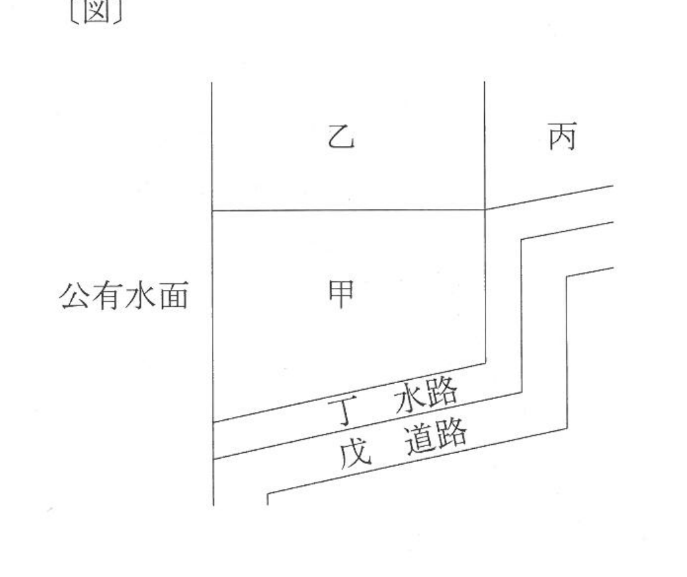

問題文・条件
次の〔図〕に示されている各土地の筆界特定の申請に関する。
肢 ア
H24-10-ア
甲土地と乙土地との筆界について既に筆界特定登記官による筆界特定がされている場合においては、当該筆界特定の資料となった文書が偽造されたものであったときでも、甲土地の所有権の登記名義人であるAは、甲土地及び乙土地を対象土地として筆界特定の申請をすることはできない。

〔図〕
解答：×
既に筆界特定があっても、更に特定をする特段の必要があれば申請できる。
既に筆界特定がされているときは却下事由になるが、7号はただし書で「更に筆界特定をする特段の必要があると認められる場合」を除いている。資料となった文書が偽造されていたのは、まさにこの特段の必要がある場合である。Aは甲土地の所有権の登記名義人だから申請人の資格もある。
根拠法132条1項7号法131条1項
出典：法務省 平成24年度 土地家屋調査士試験を加工して作成
肢 イ
H24-10-イ
甲土地の所有権の登記名義人であるAから甲土地の公有水面側の一部を譲り受けたBは、甲土地及び丙土地を対象土地として筆界特定の申請をすることはできない。
〔図〕
解答：○
筆界は隣接する土地の間の線。甲土地と丙土地は接していないので、両者を対象土地にはできない。
筆界特定の申請は、当該土地とこれに隣接する他の土地との筆界について行う。図では甲土地と丙土地の間に乙土地が入り、両者は接していない。接していない土地の間に筆界はなく、対象土地にすることはできない。Bが甲土地の一部を譲り受けたことは結論を変えない。
根拠法131条1項法123条1号
出典：法務省 平成24年度 土地家屋調査士試験を加工して作成
肢 ウ
H24-10-ウ
甲土地について登記された抵当権の登記名義人であるCは、甲土地及び乙土地を対象土地として筆界特定の申請をすることができる。
〔図〕
解答：×
申請できるのは所有権登記名義人等。抵当権者は含まれない。
申請人となれるのは所有権登記名義人等、すなわち所有権の登記名義人・表題部所有者・表題登記がない土地の所有者とその一般承継人である。抵当権の登記名義人はこのいずれでもない。申請すれば権限を有しない者の申請として却下される。
根拠法131条1項法123条5号法132条1項2号
出典：法務省 平成24年度 土地家屋調査士試験を加工して作成
肢 エ
H24-10-エ
無地番の丁水路を所有するD市は、丁水路及び隣接するE市が所有する無地番の戊道路を対象土地として筆界特定の申請をすることができる。
〔図〕
解答：×
筆界は表題登記がある土地との間の線。無地番の土地同士の境は筆界ではない。
筆界の定義は「表題登記がある一筆の土地」と隣接する他の土地との間の線である。隣接地の側は表題登記がなくてもよいが、一方は表題登記がある一筆の土地でなければならない。丁水路も戊道路も無地番で表題登記がなく、その間に筆界は存在しない。筆界特定の対象にならない。
根拠法123条1号法131条1項
出典：法務省 平成24年度 土地家屋調査士試験を加工して作成
肢 オ
H24-10-オ
甲土地を所有するAが、隣接する乙土地を所有するFに対し、Aが所有する範囲について所有権の確認の訴えを提起し、その判決が確定した場合であっても、Aは、甲土地及び乙土地を対象土地として筆界特定の申請をすることができる。
〔図〕
解答：○
却下事由になるのは筆界確定訴訟の判決の確定。所有権確認の判決は筆界を決めないので、申請できる。
6号が却下事由とするのは、筆界の確定を求める訴えに係る判決が確定しているときである。Aが提起したのは所有権の範囲を確認する訴えで、その判決は所有権界を定めるにとどまり、筆界を確定するものではない。判決が確定していても、甲土地と乙土地の筆界について筆界特定の申請ができる。
根拠法132条1項6号法135条2項
出典：法務省 平成24年度 土地家屋調査士試験を加工して作成